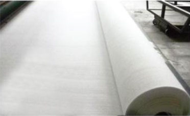

莱芜市中兴土工材料有限公司
SHENZHOU GEOSYNTHETICS
服务热线：
0510-87597688
首页
企业简介
新闻中心
产品与服务
重要用户
荣誉资质
生产设备
联系我们
热门搜索关键词：
土工格栅,钢塑格栅,土工材料
您的位置：
首页
>
新闻中心
资讯中心
公司动态
行业新闻
技术答疑
咨询热线
0510-87597688
单向土工格栅以塑料单向最为出色
单向拉伸土工格栅是一种以高分子聚合物为主要原料，然后加入一定的防紫外线、抗老化助剂，经过单向拉伸，可以使原来分布散乱的链形分子重新定向排列呈线性的状态，经挤出压成薄板了之后再冲规则孔网，然后就是纵向拉伸而成的高强度土工材料。这种过程中使高分子成定向线性状态…...
了解详情
土工格栅在堤防的主要目的
在许多工程，材料和该技术的优势采用土工格栅越来越被认可的工程部门...
了解详情
三种类型的塑料土工格栅的加固作用
塑料土工格栅是由高密度聚乙烯。它符合ISO9001标准。塑料土工格栅具有良好的耐腐蚀性和较高的接头效率。...
了解详情
钢塑土工格栅在公路施工中有重要应用
钢塑土工格栅是由聚酯聚酯纤维制成。经编针织结构，织物中的经纱和纬纱不会相互弯曲，交叉点与高强度纤维丝结合形成牢固的连接点，充分发挥其机械性能...
了解详情
钢塑土工格栅的一些性能特性
单向拉伸土工格栅是一种以高分子聚合物为主要原料，加入一定的防紫外线、抗老化助剂，经过单向拉伸使原来分布散乱的链形分子重新定向排列呈线性状态，经挤出压成薄板再冲规则孔网，然后纵向拉伸而成的高强度土工材料。这种过程中使高分子成定向线性状态并形成分布均匀、节点强…...
了解详情

土工布的种类和应用
土工格栅用于路基补强，使粒状填料与网格互相锁合在一起，形成稳定的平面，防止填料下陷，并可将垂直载苛分散，地理条件恶劣地区可采用多层补强；2. 铺于堤坝及路基填土中能增加它的稳定性，减少占地面积；3. 用于路面补强，使网格与路面材料掺合在一起，可以有效地分散…...
了解详情
<
1
>